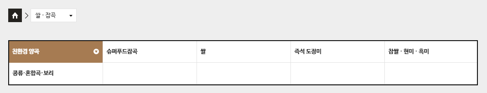
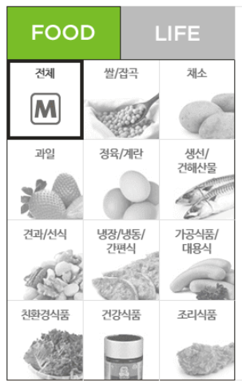
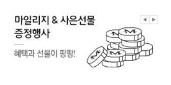

- PC 웹 접근성 지침에서 검사항목 별, 검사방법을 한 눈에 파악할 수 있도록 별도 정리하여 제공합니다.
· 텍스트 아닌 콘텐츠는 그 의미나 용도를 이해할 수 있도록 대체 텍스트를 제공해야 한다.
· 대체 텍스트는 중복으로 제공하지 않는다.
- 롯데마트 로고 이미지의 대체텍스트 제공
<img src="http://image.lottemart.com/v3/images/layout/h1_logo_01.gif" alt="롯데마트 Mall 새로운 생활의 큐레이터">
- 메인 슬라이드 이미지 적용 예시 : 이미지가 제공하는 모든 내용을 alt 속성에 제공하여 이미지의 정보를 이해할 수 있음
<img src="http://image.lottemart.com/lim/static_root/images/front/contents/banner/2018/20181207015150210.jpg" alt="M쿠폰 회원 특별 혜택전 최대 20% 추가할인 상품 다모았다! " width="1600" height="500">
- HOT PICK! 기획전 이미지 맵에 대하여 대체 텍스트 제공
- 여러 개가 합쳐진 한 이미지에 대해 접근을 원활히 하기 위해서 대체 텍스트를 제공해야 한다.
- 이미지 맵을 사용할 때는 큰 이미지 전체에 대한 대체 텍스트와 부분 영역에 대한 대체 텍스트를 반드시 넣어 주어야 한다.
<img src="//simage.lottemart.com/lm2/images/contents/2019/01/C2060001_000000000765_1030_576.jpg" usemap="#hotpick_C2060001_000000000765" class="thumb" alt="FOOD" width="1030" height="576">
<map name="hotpick_C2060001_000000000765">
<area shape="rect" coords="1,1,515,575" href="http://www.lottemart.com/plan/planDetail.do?CategoryID=C2060001&MkdpSeq=000000000765" alt="즉석 도정 블렌딩 米 나만의 쌀 레시피">
<area shape="rect" coords="515,1,1028,287" href="http://www.lottemart.com/plan/planDetail.do?CategoryID=C2060002&MkdpSeq=000000000916" alt="이탈리아 고품격 파스타 디벨라 이탈리아 식탁으로 초대">
<area shape="rect" coords="515,287,772,575" href="http://www.lottemart.com/plan/planDetail.do?CategoryID=C2060002&MkdpSeq=000000000913" alt="따뜻한 차와 커피 찬바람과 미세먼지의 밀당">
<area shape="rect" coords="772,287,1028,575" href="http://www.lottemart.com/plan/planDetail.do?CategoryID=C2060001&MkdpSeq=000000000751" alt="간편 채소, 컷팅 과일 요리가 제일 쉬웠어요">
</map>
- 일러스트 지도에 대하여 대체 텍스트 제공
- 이미지에 내용이 많은 경우 alt 속성의 값은 이미지 제목 정도로 제공하고, 이미지의 바로 다음에 이미지 내용과 구조 정보를 담은 HTML을 숨겨서 제공한다
- ※ 주의사항 : 숨김텍스트 제공 시 visibility:hidden / display:none 은 스크린리더기 마다 인식 여부가 다르므로 사용하지 않아야 함
<p><img src="//simage.lottemart.com/lm2/images/contents/2018/03/C2060008_000000000022_980_layer.png" alt="주유소 찾아오는길"><button class="layerFunc">닫기</button></p>
<div class="blind">
<dl>
<dt>주유소 찾아오는길, 주소: 경기 용인시 기흥구 진산로 116, 전화번호 : 031-266-2500</dt>
<dd>진입로 진입후 좌측노선은 주유및픽업 이용, 우측노선은 픽업및마트이용(주유불가) 노선이며 행복드림 주유소에서 픽업 하시면 됩니다.</dd>
</dl>
</div>
- css 스타일 시트등으로 이미지를 백그라운 이미지로 보여주는 경우 HTML은 이미지와 동일한 내용을 숨김 텍스트로 보여준다.
※ 주의사항 : 숨김텍스트 제공 시 visibility:hidden / display:none 은 스크린리더기 마다 인식 여부가 다르므로 사용하지 않아야 함
<i class="icon-goods-discount"><em class="number">30</em> <span class="blind">% 할인</span></i>
<i class="icon-goods-type1">살수록 더싸게</i>
<i class="icon-band-delivery1">매장배송</i>
- 배경 이미지 형식으로 불러오는 버튼에 대하여 blind 태그를 이용하여 대체 텍스트 제공.
※ 주의사항 : 숨김텍스트 제공 시 visibility:hidden / display:none 은 스크린리더기 마다 인식 여부가 다르므로 사용하지 않아야 함
<a href="javascript:;" data-button-name="btnAddWish" data-category-id="C0010144" data-product-code="8809332398425" title="위시리스트 담기" class="dibs ">
<span class="blind">위시리스트</span>
</a>
<button id="basketBtn_8809332398425" title="장바구니 담기" type="button" class="btn-basket" data-prod-cd="8809332398425" data-category-id="C0010144" data-is-sold-out="false" data-max-qty="999" data-min-qty="1" data-method="basket" data-is-manufacturing-product="false" data-option-yn="N" data-prod-type-cd="01" data-prod-title="정관장 홍삼진본(40ML*20포)"></button>
- 상품이미지의 대체 텍스트는 상품명과 동일하게 제공한다.
- 관리자 페이지를 통해 등록하는 경우 관리자 페이지에 해당 상품의 alt값을 넣을 수 있도록 제공 되어야 한다.
<a href="javascript:;" onclick="goProductDetail('C001002600060004', 'D000003277491', 'N'); return false;" data-cid="C001002600060004" data-pid="D000003277491" data-title="3M 주방 수세미 모음(2/3/10입)<br>(일반형/원데이형)" tabindex="0">
<img src="http://image.lottemart.com/lim/static_root/images/prodimg/D0000/D000003277491_1_375.jpg" onerror="this.src='http://image.lottemart.com/v3/images/layout/noimg_prod_500x500.jpg';" alt="3M 주방 수세미 모음(2/3/10입)<br>(일반형/원데이형)" class="thumb">
</a>
- QR코드 등과 같이 시각적인 정보만으로 확인이 가능한 콘텐츠는 이동 주소 정보 등을 대체 텍스트 또는 설명, 링크 등으로 제공해야 한다.
<img src="http://image.lottemart.com/v3/images/layout/img_cs_ltmmoguide_16.jpg" alt="롯데마트몰 모바일 앱 다운로드 바로가기 QR코드">
<img src="http://image.lottemart.com/v3/images/layout/img_cs_ltmmoguide_17.jpg" alt="m.lottemart.com 모바일 웹 이동 QR코드">
- 하나의 이미지로 처리하고 대체 텍스트에 평점을 인지할 수 있도록 제공한다

<p class="customer">
<strong class="tit">고객만족도</strong>
<em class="score" id="reviewScore">9.6</em>
<span class="ico-star-type1">
<em style="width:96%;">9.6 / 10점 만점</em>
</span>
</p>
· 광고성 콘텐츠(자막이 없는 동영상) 의 내용설명 글을 제공한다.
· 음성이 없는 경우 : 영상에 대한 설명글 제공
· 음성이 있는 경우 : 영상에 대한 원고 또는 싱크되는 자막 제공
· 컨텐츠는 색에 관계없이 인식될 수 있어야 한다.
· 특정한 색을 구분할 수 없는 사용자나 흑백 디스플레이 사용자 등이 색을 배제하여도 컨텐츠를 인식할 수 있도록 제공해야 한다.
- 고객센터의 상담현황 안내 부분의 색을 뚜렷한 색상 차이로 제공하여 색맹이나 색약자도 알아 볼 수 있음.
- 다른 모양이나 패턴 등의 차이가 없이 색상의 차이만으로 구별되는 요소는 색맹이나 색약자가 알아보기 어려움.
- 콘텐츠에서 제공하는 모든 정보는 색을 배제하여도 특정한 색을 구별할 수 없는 사용자나 흑백 디스플레이 사용자, 흑백 인쇄물을 보는 사용자가 해당 콘텐츠를 인식할 수 있도록 제공.
- 롯데마트의 상품 리스트는 영역별로 뚜렷한 색상차이를 두고 제공하여 색맹이나 색약자도 알아 볼 수 있음.
- 다른 모양이나 패턴 등의 차이가 없이 색상의 차이만으로 구별되는 요소는 색맹이나 색약자가 알아보기 어려움.
- 콘텐츠에서 제공하는 모든 정보는 색을 배제하여도 특정한 색을 구별할 수 없는 사용자나 흑백 디스플레이 사용자, 흑백 인쇄물을 보는 사용자가 해당 콘텐츠를 인식할 수 있도록 제공.
· 지시사항은 모양, 크기, 위치, 방향, 색, 소리 등에 관계없이 인식될 수 있어야 한다.
· 특정한 감각(시각, 청각 등)에 의존하여 지시사항을 제공할 경우 해당 감각에 장애가 있다면 인식할 수 없으므로, 다른 감각을 통해서도 인식할 수 있도록 지시사항을 제공해야 한다.
· 지시사항 정보를 특정 감각(색, 크기, 모양, 방향 등)에만 의존하여 제공했는지 체크
- 메인화면 전문관 영역의 더보기 버튼 링크의 기능에 대해 정확히 어떤 것을 더 보는 것인지에 대해 설명하는 대체 텍스트를 제공

<button type="button" class="md-more" title="메인 전문관 영역의 숨겨진 영역을 열어주는 더보기 버튼">더보기</button>
- “위에 있는 버튼을 누르십시오” 등 화면 표시 위치나 “빨간색을 누르십시오” 등 색을 매개로 한 전달을 하지 않도록 함.
· 전경 콘텐츠와 배경은 4.5:1 이상의 명도 대비를 유지한다.
· 전경 콘텐츠는 정보를 전달하고 있는 '문자, 아이콘, 콘트롤(a, button, input, select, textarea)'의 선과 면을 의미한다.
· 문자 크기가 bold 19px 이상 또는 normal 24px 이상인 경우 3:1 이상의 명도 대비를 유지한다.
· 아이콘, 콘트롤 등 시각 정보가 3px 이상 두꺼운 경우 3:1 이상의 명도 대비를 유지한다.
- 글자색과 배경색간의 명도 차이가 작으면 약시자가 보기 힘들어 짐
- 일반적인 크기의 글자는 4.5:1 이상, 18pt 이상의 큰 글자(볼드체는 14pt 이상)는 3:1 이상 필요
· 자동으로 소리가 재생되지 않아야 한다
- 마우스 클릭하거나 키보드로 접근 후 선택을 해야 동영상이 실행되도록 영상 콘텐츠를 구현하고 있어 배경음으로 인한 방해가 없도록 한다
· 이웃한 콘텐츠는 구별될 수 있어야 한다.
- HTML로 표현되는 콘텐츠 관련 태그들에 border 속성을 추가하여 테두리 선 굵기를 px(픽셀) 단위로 지정하거나, css 스타일시트를 이용하여 콘텐츠에 border 속성을 지정할 수 있다.

- 흑백 스크린(구형 PDA 등) 또는 경조(硬調: 고대비) 모드사용자들도 콘텐츠의 내용이나 구조를 손쉽게 이해할 수 있다.
- 웹 페이지에 보이는 핵심 텍스트 콘텐츠와 배경 간의 충분한 대비를 제공하여 저시력자, 색각 이상자, 고령자 등도 콘텐츠를 인식할 수 있도록 제공한다.
- 텍스트는 CSS의 font-style 속성으로 텍스트 구성 요소를 강조하고 이미지는 CSS의 background-image를 사용하여 텍스트 뒤에 그림을 표시하여 시각적으로 구분한다.

· 모든 기능은 키보드 만으로도 사용할 수 있어야 한다.
· 키보드에 의한 초점은 논리적으로 이동해야 하며, 시각적으로 구별할 수 있어야 한다.
- 롯데마트 gnb 메뉴의 키보드 이용
<img src="http://image.lottemart.com/v3/images/layout/h1_logo_01.gif" alt="롯데마트 Mall 새로운 생활의 큐레이터">
· 키보드에 의한 초점은 논리적으로 이동해야 하며 시각적으로 구별할 수 있어야 한다
- 롯데마트 메인 화면의 BEST 메뉴내의 키보드 이용
<article class="main-best">
<div class="best-nav jq-tab">
<a href="#bestFood" class="best-tab01 active" title="현재 선택">FOOD</a>
<a href="#bestLife" class="best-tab02">LIFE</a>
</div>
<div class="best-conts js-tabcontents">
<section class="best-cont clear-after best-cont1 active" id="bestFood">
<h3 class="blind">FOOD</h3>
<nav class="best-tab js-tabnav" id="bestFood">
<a href="javascript:;" class="nav-link nav-link1-1 active" data-category-id="foodAll" data-tab-index="02" data-current-page="1"><strong class="inner">전체</strong></a>
<a href="javascript:;" class="nav-link nav-link1-2" data-category-id="C0010011" data-tab-index="02" data-current-page="2"><strong class="inner">쌀/잡곡</strong></a>
<a href="javascript:;" class="nav-link nav-link1-3" data-category-id="C0010012" data-tab-index="02" data-current-page="3"><strong class="inner">채소</strong></a>
<a href="javascript:;" class="nav-link nav-link1-4" data-category-id="C0010013" data-tab-index="02" data-current-page="4"><strong class="inner">과일</strong></a>
<a href="javascript:;" class="nav-link nav-link1-5" data-category-id="C0010014" data-tab-index="02" data-current-page="5"><strong class="inner">정육/계란</strong></a>
<a href="javascript:;" class="nav-link nav-link1-6" data-category-id="C0010015" data-tab-index="02" data-current-page="6"><strong class="inner">생선/<br>건해산물</strong></a>
<a href="javascript:;" class="nav-link nav-link1-7" data-category-id="C0010046" data-tab-index="02" data-current-page="7"><strong class="inner">견과/선식</strong></a>
<a href="javascript:;" class="nav-link nav-link1-8" data-category-id="C0010016" data-tab-index="02" data-current-page="8"><strong class="inner">냉장/냉동/<br>간편식</strong></a>
<a href="javascript:;" class="nav-link nav-link1-9" data-category-id="C0010017" data-tab-index="02" data-current-page="9"><strong class="inner">가공식품/<br>대용식</strong></a>
<a href="javascript:;" class="nav-link nav-link1-10" data-category-id="C0010052" data-tab-index="02" data-current-page="10"><strong class="inner">친환경식품</strong></a>
<a href="javascript:;" class="nav-link nav-link1-11" data-category-id="C0010053" data-tab-index="02" data-current-page="11"><strong class="inner">건강식품</strong></a>
<a href="javascript:;" class="nav-link nav-link1-12" data-category-id="C0010040" data-tab-index="02" data-current-page="12"><strong class="inner">조리식품</strong></a>
</nav>
<div class="wrap-tab-cont js-tabcont"><div id="bestFood-foodAll" class="tab-cont active"><div class="wrap-prod-list">
<div class="prod-list clear-after">
<!-- wrapper tag가 유동적이라서 헷갈릴수 있어 일부러 들여쓰기 이렇게 함 -->
<article class="product-article" data-panel="product">
<!-- TODO : 해당 페이지 사용하는 전체 쿼리 찾아서 CURR_SELL_PRC > 100 조건 걸려있는지 확인후에 제거 필요 -->
<!-- 베스트 순위 표시 -->
<!-- ** 추천상품 썸네일 -->
<div class="wrap-thumb">
<a href="javascript:;" onclick="goProductDetail('C001001200040001', '0400669780006', 'N', '', '', '00001');return false; " class="thumb-link" data-category-id="C001001200040001" data-prod-cd="0400669780006">
<img src="http://image.lottemart.com/lim/static_root/images/prodimg/04006/0400669780006_1_208.jpg" width="208" id="prodImg_0400669780006" alt="파프리카(개)" class="thumb" onerror="javascript:showNoImage(this)">
</a>
<!-- 할인상품 썸네일 할인스티커 -->
<span class="wrap-tag">
<!-- 우선순위에 의한 1개만 노출 -->
</span>
<span class="wrap-band ">
<i class="icon-band-delivery1">
icon-band-delivery1</i>
</span>
<span class="prod-link">
<a href="javascript:;" data-button-name="btnAddWish" data-category-id="C001001200040001" data-product-code="0400669780006" title="위시리스트 담기" class="dibs ">
<span class="blind">위시리스트</span>
</a>
<a href="javascript:;" class="blank" title="새 창 열림" onclick="goProdZoom('C001001200040001','0400669780006', '001', 'N', 'N','00001'); event.stopPropagation();">
<span class="blind">새창 보기</span>
</a>
</span>
</div>
<!-- 20160925 중량미노출 수정 -->
<div class="wrap-info">
<p class="prod-name">
<strong>
<a href="javascript:;" class="thumb-link" onclick="goProductDetail('C001001200040001', '0400669780006', 'N', '', '', '00001');return false;" data-category-id="C001001200040001" data-prod-cd="0400669780006">
파프리카(개)</a>
</strong>
</p>
<p class="price-max">판매가 <span class="num-n"><em>1,180</em></span>원
</p>
<div class="wrap-spinner">
<div class="spinner-input" data-is-range="true">
<label for="orderQty_0400669780006" class="blind">수량</label>
<input id="orderQty_0400669780006" name="orderQty_0400669780006" type="text" value="1" max="200" min="1" data-category-id="C001001200040001" data-prod-cd="0400669780006" style="ime-mode:disabled" maxlength="3" title="수량">
<button type="button" class="sp-minus" title="수량 감소" data-option-yn="N"><i class="ico-minus">감소</i></button><button type="button" class="sp-plus" title="수량 증가" data-option-yn="N"><i class="ico-plus">증가</i></button></div>
<button id="basketBtn_0400669780006" title="장바구니 담기" type="button" class="btn-basket" data-prod-cd="0400669780006" data-category-id="C001001200040001" data-is-sold-out="false" data-max-qty="200" data-min-qty="1" data-method="basket" data-is-manufacturing-product="false" data-option-yn="N" data-prod-type-cd="01" data-prod-title="파프리카(개)">
</button>
</div>
</div>
</article>
<!-- 1depth에서 사용 -->
<!-- wrapper tag가 유동적이라서 헷갈릴수 있어 일부러 들여쓰기 이렇게 함 -->
<article class="product-article" data-panel="product">
<!-- TODO : 해당 페이지 사용하는 전체 쿼리 찾아서 CURR_SELL_PRC > 100 조건 걸려있는지 확인후에 제거 필요 -->
<!-- 베스트 순위 표시 -->
<!-- ** 추천상품 썸네일 -->
<div class="wrap-thumb">
<a href="javascript:;" onclick="goProductDetail('C001001700130001', '8801056049935', 'N', '', '', '00001');return false; " class="thumb-link" data-category-id="C001001700130001" data-prod-cd="8801056049935">
<img src="http://image.lottemart.com/lim/static_root/images/prodimg/88010/8801056049935_1_208.jpg" width="208" id="prodImg_8801056049935" alt="롯데 아이시스8.0(2L*6)" class="thumb" onerror="javascript:showNoImage(this)">
</a>
<span class="wrap-tag">
</span>
<span class="wrap-band ">
<i class="icon-band-delivery1">
icon-band-delivery1</i>
</span>
<span class="prod-link">
<a href="javascript:;" data-button-name="btnAddWish" data-category-id="C001001700130001" data-product-code="8801056049935" title="위시리스트 담기" class="dibs ">
<span class="blind">위시리스트</span>
</a>
<a href="javascript:;" class="blank" title="새 창 열림" onclick="goProdZoom('C001001700130001','8801056049935', '001', 'N', 'N','00001'); event.stopPropagation();">
<span class="blind">새창 보기</span>
</a>
</span>
</div>
<!-- 20160925 중량미노출 수정 -->
<div class="wrap-info">
<p class="prod-name">
<strong>
<a href="javascript:;" class="thumb-link" onclick="goProductDetail('C001001700130001', '8801056049935', 'N', '', '', '00001');return false;" data-category-id="C001001700130001" data-prod-cd="8801056049935">
롯데 아이시스8.0(2L*6)</a>
</strong>
</p>
<p class="price-max">판매가 <span class="num-n"><em>3,780</em></span>원
</p>
<div class="wrap-spinner">
<div class="spinner-input" data-is-range="true">
<label for="orderQty_8801056049935" class="blind">수량</label>
<input id="orderQty_8801056049935" name="orderQty_8801056049935" type="text" value="1" max="2" min="1" data-category-id="C001001700130001" data-prod-cd="8801056049935" style="ime-mode:disabled" maxlength="3" title="수량">
<button type="button" class="sp-minus" title="수량 감소" data-option-yn="N"><i class="ico-minus">감소</i></button><button type="button" class="sp-plus" title="수량 증가" data-option-yn="N"><i class="ico-plus">증가</i></button></div>
<button id="basketBtn_8801056049935" title="장바구니 담기" type="button" class="btn-basket" data-prod-cd="8801056049935" data-category-id="C001001700130001" data-is-sold-out="false" data-max-qty="2" data-min-qty="1" data-method="basket" data-is-manufacturing-product="false" data-option-yn="N" data-prod-type-cd="01" data-prod-title="롯데 아이시스8.0(2L*6)">
</button>
</div>
</div>
</article>
<article class="product-article" data-panel="product">
<div class="wrap-thumb">
<a href="javascript:;" onclick="goProductDetail('C001001700140010', '8801062517916', 'N', '', '', '00001');return false; " class="thumb-link" data-category-id="C001001700140010" data-prod-cd="8801062517916">
<img src="http://image.lottemart.com/lim/static_root/images/prodimg/88010/8801062517916_1_208.jpg" width="208" id="prodImg_8801062517916" alt="롯데 칙촉(180G)" class="thumb" onerror="javascript:showNoImage(this)">
</a>
<span class="wrap-tag">
<i class="icon-goods-type1">살수록더싸게</i>
</span>
<span class="wrap-band ">
<i class="icon-band-delivery1">
icon-band-delivery1</i>
</span>
<span class="prod-link">
<a href="javascript:;" data-button-name="btnAddWish" data-category-id="C001001700140010" data-product-code="8801062517916" title="위시리스트 담기" class="dibs ">
<span class="blind">위시리스트</span>
</a>
<a href="javascript:;" class="blank" title="새 창 열림" onclick="goProdZoom('C001001700140010','8801062517916', '001', 'N', 'N','00001'); event.stopPropagation();">
<span class="blind">새창 보기</span>
</a>
</span>
</div>
<!-- 20160925 중량미노출 수정 -->
<div class="wrap-info">
<p class="prod-name">
<strong>
<a href="javascript:;" class="thumb-link" onclick="goProductDetail('C001001700140010', '8801062517916', 'N', '', '', '00001');return false;" data-category-id="C001001700140010" data-prod-cd="8801062517916">
롯데 칙촉(180G)</a>
</strong>
</p>
<p class="price-max">판매가 <span class="num-n"><em>3,840</em></span>원
</p>
<div class="wrap-spinner">
<div class="spinner-input" data-is-range="true">
<label for="orderQty_8801062517916" class="blind">수량</label>
<input id="orderQty_8801062517916" name="orderQty_8801062517916" type="text" value="1" max="100" min="1" data-category-id="C001001700140010" data-prod-cd="8801062517916" style="ime-mode:disabled" maxlength="3" title="수량">
<button type="button" class="sp-minus" title="수량 감소" data-option-yn="N"><i class="ico-minus">감소</i></button><button type="button" class="sp-plus" title="수량 증가" data-option-yn="N"><i class="ico-plus">증가</i></button></div>
<button id="basketBtn_8801062517916" title="장바구니 담기" type="button" class="btn-basket" data-prod-cd="8801062517916" data-category-id="C001001700140010" data-is-sold-out="false" data-max-qty="100" data-min-qty="1" data-method="basket" data-is-manufacturing-product="false" data-option-yn="N" data-prod-type-cd="01" data-prod-title="롯데 칙촉(180G)">
</button>
</div>
</div>
</article>
<!-- 1depth에서 사용 -->
</div>
</div>
</div></div>
</section>
<section class="best-cont clear-after best-cont2" id="bestLife">
<h3 class="blind">LIFE</h3>
<nav class="best-tab js-tabnav" id="bestLife">
<a href="javascript:;" class="nav-link nav-link2-1" data-category-id="lifeAll" data-tab-index="03" data-current-page="13"><strong class="inner">전체</strong></a>
<a href="javascript:;" class="nav-link nav-link2-2" data-category-id="C0010021" data-tab-index="03" data-current-page="14"><strong class="inner">유아/<br>출산용품</strong></a>
<a href="javascript:;" class="nav-link nav-link2-3" data-category-id="C0010023" data-tab-index="03" data-current-page="15"><strong class="inner">세제/휴지</strong></a>
<a href="javascript:;" class="nav-link nav-link2-4" data-category-id="C0010024" data-tab-index="03" data-current-page="16"><strong class="inner">헤어/바디</strong></a>
<a href="javascript:;" class="nav-link nav-link2-5" data-category-id="C0010025" data-tab-index="03" data-current-page="17"><strong class="inner">가구/수납/조명/보수</strong></a>
<a href="javascript:;" class="nav-link nav-link2-6" data-category-id="C0010026" data-tab-index="03" data-current-page="18"><strong class="inner">주방/<br>청소용품</strong></a>
<a href="javascript:;" class="nav-link nav-link2-7" data-category-id="C0010027" data-tab-index="03" data-current-page="19"><strong class="inner">문구/<br>사무용품</strong></a>
<a href="javascript:;" class="nav-link nav-link2-8" data-category-id="C0010115" data-tab-index="03" data-current-page="20"><strong class="inner">침구/원예/데코</strong></a>
<a href="javascript:;" class="nav-link nav-link2-9" data-category-id="C0010028" data-tab-index="03" data-current-page="21"><strong class="inner">패션의류/<br>언더웨어</strong></a>
<a href="javascript:;" class="nav-link nav-link2-10" data-category-id="C0010029" data-tab-index="03" data-current-page="22"><strong class="inner">신발/잡화</strong></a>
<a href="javascript:;" class="nav-link nav-link2-11" data-category-id="C0010030" data-tab-index="03" data-current-page="23"><strong class="inner">스포츠/레저</strong></a>
<a href="javascript:;" class="nav-link nav-link2-12" data-category-id="C0010054" data-tab-index="03" data-current-page="24" value="C0010054"><strong class="inner">친환경<br>생활용품</strong></a>
</nav>
<div class="wrap-tab-cont js-tabcont"></div>
</section>
</div>
<a href="/best/bestMain.do?SITELOC=AC023" class="list-more">베스트 더보기</a>
</article>
- onfocus=“this.blur();를 사용한 경우, 키보드 접근이 불가하므로 this.blur()를 제공하지 않아야 함
:focus {
outline: -webkit-focus-ring-color auto 5px;
}
- 시각적으로는 이벤트 더보기 버튼이 컨텐츠 영역 위에 있지만 컨텐츠 영역의 이벤트에 초점 이동을 한 후 이벤트를 더 보고싶을 때 더보기 버튼을 사용하므로 마크업은 마지막에 더보기를 넣어 논리적 순서에 맞게 마크업을 진행해야 한다
<div class="wrap-maintype">
<ul class="event-thumb-list clear-after">
<li>
<a href="http://www.lottemart.com/event/detail.do?categoryId=C0072168&SITELOC=OH004" style="cursor:pointer;" class="link-event">
<em class="tag-event-type tag-type2">이벤트</em>
<div class="wrap-thumb"><img src="http://image.lottemart.com/lim/static_root/images/front/event/bn/pc/2018/20181126112402973_294_230.jpg" alt="12월 럭키룰렛 출석체크 이벤트" class="thumb" width="294" height="230"></div>
<strong class="tit">12월 럭키룰렛 출석체크 이벤트</strong>
<dl class="info">
<dt class="info-tit">기간 : </dt>
<dd class="info-txt">2018.12.01 ~ 2018.12.31</dd>
</dl>
</a>
</li>
<li>
<a href="http://www.lottemart.com/event/detail.do?categoryId=C0072158&SITELOC=OH004" style="cursor:pointer;" class="link-event">
<em class="tag-event-type tag-type2">이벤트</em>
<div class="wrap-thumb"><img src="http://image.lottemart.com/lim/static_root/images/front/event/bn/pc/2018/20181029034406121_294_230.jpg" alt="롯데마트몰 TV CF 댓글 이벤트 당첨자 안내" class="thumb" width="294" height="230"></div>
<strong class="tit">롯데마트몰 TV CF 댓글 이벤트 당첨자 안내</strong>
<dl class="info">
<dt class="info-tit">기간 : </dt>
<dd class="info-txt">2018.10.29 ~ 2018.12.31</dd>
</dl>
</a>
</li>
<li>
<a href="http://www.lottemart.com/event/detail.do?categoryId=C0072141&SITELOC=OH004" style="cursor:pointer;" class="link-event">
<em class="tag-event-type tag-type2">이벤트</em>
<div class="wrap-thumb"><img src="http://image.lottemart.com/lim/static_root/images/front/event/bn/pc/2018/20180918104849860_294_230.jpg" alt="모바일 쇼핑 마스터 안내 " class="thumb" width="294" height="230"></div>
<strong class="tit">모바일 쇼핑 마스터 안내 </strong>
<dl class="info">
<dt class="info-tit">기간 : </dt>
<dd class="info-txt">2018.09.19 ~ 2019.12.31</dd>
</dl>
</a>
</li>
</ul>
<a href="/event/aliveEvent.do?SITELOC=AC025" class="list-more">이벤트 더보기</a>
</div>
- 사용자 입력 및 컨트롤은 조작 가능하도록 제공되어야 한다. - 일부 슬라이드나 자동재생 요소들은 해당영역으로 초점이 진입되는 순간 자동 정지되도록 구현됨.
- 디스플레이 장치별 화면크기와 해상도에 따라 보여지는 콘텐츠의 크기가 매번 달라지게 된다. 디스플레이 장치와 무관한 콘텐츠 사용의 편의성을 고려하여 콘텐츠의 크기는 window 표준 해상도(96DPI)와 17인치 모니터를 기준으로 대각선 방향 길이로 6mm 이상이 되도록 HTML 태그와 스타일 속성의 width, height를 조절하고 콘텐츠의 선택시 이웃한 콘텐츠와 선택이 중첩되지 않도록 콘텐츠 안쪽 여백은 1픽셀 이상이 되도록 스타일 속성의 padding을 이용하여 조절하면 된다.
- 시간 제한이 있는 콘텐츠는 응답시간을 조절할 수 있어야 한다
- 시각장애인, 상지 장애인의 웹 탐색 속도는 비장애인에 비해 느리므로 자동 변경되는 콘텐츠는 이들의 이용에 큰 방해가 됨.
- 충분한 시간을 제공하거나 제어버튼을 제공해야 함.
- 이벤트 소개 등 일정 주기로 교체되는 콘텐츠는 하나가 최소 3초 이상 노출되어야 함.
- 이벤트 소개 등 일정 주기로 교체되는 콘텐츠는 하나가 최소 3초 이상 노출되어야 함.
- 자동으로 변경되는 콘텐츠는 움직임을 제어할 수 있어야 한다.
- 포커스 진입시 자동멈춤 처리되는 메인 비주얼 슬라이드
//gnb마지막 요소에서 상단 모양 컨틀롤러로 촛점이동
var fixGnbLastFocusable = function(){
var $gnb = $('#gnbScrollFixed'),
$gnbToggles = $gnb.find('.wrap-toggle'),
$gnbLastMenu = _wac.getFocusables($gnbToggles.last().find('.wrap-subnav')).last(),
$nextEl = $directionFocusables.first();
var tabHandler = function(e){
!_wac.isShiftTabEvent(e)
&& _wac.isTabEvent(e)
&& !_wac.isEmpty($nextEl)
&& _wac.onNextAsync(e, $nextEl);
contSlider.stopAuto();
};
_wac.wireUpEventAsync($gnbLastMenu, 'keydown', tabHandler);
return $gnbLastMenu;
};
· 초당 3~50회 주기로 깜빡이거나 번쩍이는 콘텐츠를 제공하지 않아야 한다.
·콘텐츠의 반복되는 영역은 건너뛸 수 있어야 한다.
- 키보드만을 이용하는 지체 장애인의 탐색 편의를 위해 각 페이지 메뉴시작 부분에 해당 페이지의 핵심 콘텐츠로 바로 이동할 수 있는 링크를 제공
- 가급적이면 항상 드러나도록 하는 것이 좋으며, 드러나기 곤란한 경우 포커스 시에만 드러나도록 함
<nav class="skip-menu">
<a href="#contents">본문 바로가기</a>
<a href="#gnbScrollFixed">주메뉴 바로가기</a>
</nav>
· 페이지, 프레임, 콘텐츠 블록에는 적절한 제목을 제공해야 한다.
· 적절한 제목은 페이지, 프레임, 콘텐츠 블록을 유추하여, 사용자가 웹 콘텐츠를 운용하기 쉽게 도와준다.
- 롯데마트 각페이지에 맞는 올바른 페이지 타이틀 제목 제공

<script type="text/javascript">
document.title = "롯데마트몰 - ${NAVILIST[1].NAME} > ${NAVILIST[2].NAME} > ${NAVILIST[3].NAME}";
$.utils.setMetaTag({
'title' : '롯데마트몰 - ${NAVILIST[1].NAME} > ${NAVILIST[2].NAME} > ${NAVILIST[3].NAME}'
});
</script>
- frame, iframe, frameset 요소의 title 속성값을 올바르게 제공.
- 상품상세 페이지의 iframe 영역은 bos 영역으로 다양한 상품정보가 입력되기 때문에 iframe의 제목은 탭메뉴와 동일한 상품정보로 제공함.
<iframe id="iframeProdInfo" name="iframeProdInfo" src="http://www.lottemart.com/iframe/ProductDesc.do?CategoryID=C20200010006&ProductCD=8809581180161" style="width: 100%;" title="상품정보" frameborder="0" scrolling="no" height="15820px"></iframe>
- <h1>, <h2> 요소 등을 부여하여 제목과 본문을 구분할 수 있도록 제공. 화면낭독기에서는 제목 간 이동이 가능하므로 더욱 운용이 용이해지게 됨.
<iframe id="iframeProdInfo" name="iframeProdInfo" src="http://www.lottemart.com/iframe/ProductDesc.do?CategoryID=C20200010006&ProductCD=8809581180161" style="width: 100%;" title="상품정보" frameborder="0" scrolling="no" height="15820px"></iframe>
· 링크 텍스트는 용도나 목적을 이해할 수 있도록 제공해야 한다.
· 링크 텍스트를 "여기를 클릭하세요." 나 "여기" 와 같은 애매모호한 표현을 사용하면 시각장애인이나 인지장애인 뿐만 아니라 비장애인들도 링크를 클릭했을 때 어떤 반응이나 어떤 페이지로 이동될 지 예측하기 어렵다.
- 상품 리스트 페이지를 리스트형으로 볼 것인지, 썸네일형으로 볼 것인지 보는 방식을 선택하는 링크 대한 올바른 텍스트를 제공

<div class="set-sort">
<a id="aList" name="btnViewType" href="javascript:;" data-type="list" class="list-sort"><span class="blind">리스트형 보기</span></a>
<a id="aImg" name="btnViewType" href="javascript:;" data-type="img" class="image-sort active" title="현재 선택"><span class="blind">썸네일형 보기</span></a>
</div>
- 장바구니 링크 요소의 내용에 알맞는 올바른 링크의 기능에대해 설명하는 대체 텍스트를 제공

<button type="button" class="btn-large-type1" title="장바구니 담기" data-prod-cd="D000003514313" data-category-id="C001013400080002" data-max-qty="100000" data-min-qty="1" data-method="basket" data-is-sold-out="false" data-option-yn="Y" data-prod-type-cd="05" data-is-manufacturing-product="false" data-prod-title="울트라히트 아동/주니어 9부세트 " id="basketBtn_D000003514313" tabindex="0">
<i class="ico-basket">장바구니</i>
</button>
· 주로 사용하는 언어를 표시해야 한다.
- 웹 페이지에서 주로 사용하는 언어는 페이지 상단에 html Tag에 lang 속성 이용
- 기본 언어 명시는 화면 낭독 프로그램이 언어를 인식하여 자동으로 음성을 변환하거나, 해당 언어에 적합한 발음을 제공할 수 있도록 한다
- Doctype에 따른 기본언어 선언 (<head> 앞에 나와야 함)
· 사용자가 의도하지 않은 기능(새 창, 초점 변화 등)은 실행되지 않아야 한다.
- L.POINT 카드번호 입력시 자동 초점 넘어가던 현상 제거
<img src="http://image.lottemart.com/v3/images/layout/h1_logo_01.gif" alt="롯데마트 Mall 새로운 생활의 큐레이터">
· 콘텐츠는 논리적인 순서로 제공해야 한다
제목과 내용을 연결하여 제공해 내용을 직관적으로 이해할 수 있게 제공한다.
<div class="wrap-tab-cont">
<div class="tab-cont active" id="tab01">
<h3 class="blind">공지사항</h3>
<ul class="list-cs">
<li><a href="http://www.lottemart.com/happycenter/customerCenterNoticeDetail.do?boardSeq=000013504633&SITELOC=AI003">롯데마트몰 경남 양산시 일부 권역 배송점포 변경 안내</a>
<span class="num-n">
<span>
2018.12.28</span>
</span>
</li>
<li><a href="http://www.lottemart.com/happycenter/customerCenterNoticeDetail.do?boardSeq=000013504547&SITELOC=AI003">롯데마트몰 충남 서천군 일부 권역 매장 배송 오픈 안내</a>
<span class="num-n">
<span>
2018.12.28</span>
</span>
</li>
<li><a href="http://www.lottemart.com/happycenter/customerCenterNoticeDetail.do?boardSeq=000013492586&SITELOC=AI003">개인정보처리방침 변경 안내드립니다.</a>
<span class="num-n">
<span>
2018.12.20</span>
</span>
</li>
<li><a href="http://www.lottemart.com/happycenter/customerCenterNoticeDetail.do?boardSeq=000013374440&SITELOC=AI003">개인정보처리방침 변경안내드립니다.</a>
<span class="num-n">
<span>
2018.10.02</span>
</span>
</li>
</ul>
<a href="http://www.lottemart.com/happycenter/notice.do?SITELOC=AI003" class="moreview"><em>공지사항 더보기</em></a>
</div>
<div class="tab-cont" id="tab02">
<h3 class="blind">당첨자발표</h3>
<ul class="list-cs">
<li><a href="http://www.lottemart.com/event/winPrizeDetail.do?boardSeq=000013527392">2018년 12월 배송평가 Reward 당첨자 발표</a>
<span class="num-n">
<span>
2019.01.11</span>
</span>
</li>
<li><a href="http://www.lottemart.com/event/winPrizeDetail.do?boardSeq=000013516635">풀무원 홈파티 2만원 이상 구매시 주방키트 증정 당첨자 공지</a>
<span class="num-n">
<span>
2019.01.04</span>
</span>
</li>
<li><a href="http://www.lottemart.com/event/winPrizeDetail.do?boardSeq=000013503518">CJ Brand Week 1주차 (스팸&고메) event 2 : 투썸 아메리카노 교환권 이벤트 당첨자 공지</a>
<span class="num-n">
<span>
2018.12.27</span>
</span>
</li>
<li><a href="http://www.lottemart.com/event/winPrizeDetail.do?boardSeq=000013503491">CJ Brand Week 1주차 (스팸&고메) event 1 : 뜌레쥬르 교환권 이벤트 당첨자 공지</a>
<span class="num-n">
<span>
2018.12.27</span>
</span>
</li>
</ul>
<a href="http://www.lottemart.com/event/winPrize.do" class="moreview-win"><em>당첨자발표 더보기</em></a>
</div>
</div>
· 표는 이해하기 쉽게 구성해야 한다
- 마우스 클릭하거나 키보드로 접근 후 선택을 해야 동영상이 실행되도록 영상 콘텐츠를 구현하고 있어 배경음으로 인한 방해가 없도록 한다
<table>
<caption>이벤트 당첨자발표 테이블</caption>
<colgroup>
<col style="width:8.2%">
<col style="width:auto">
<col style="width:19%">
<col style="width:13.5%">
</colgroup>
<thead>
<tr>
<th scope="col">번호</th>
<th scope="col">제목</th>
<th scope="col">이벤트기간</th>
<th scope="col">당첨자발표일</th>
</tr>
</thead>
<tbody>
<tr>
<td>21</td>
<td class="title"><a style="cursor:pointer;" onclick="goDetail('000013527392');" onkeypress="if(event.keyCode == 13){goDetail('000013527392'); return false;}" class="link">2018년 12월 배송평가 Reward 당첨자 발표</a>
<em class="ico-board-new">N<span class="blind">new</span></em>
</td>
<td>2019.01.01~2019.12.31</td>
<td>2019.01.11</td>
</tr>
<tr>
<td>20</td>
<td class="title"><a style="cursor:pointer;" onclick="goDetail('000013516635');" onkeypress="if(event.keyCode == 13){goDetail('000013516635'); return false;}" class="link">풀무원 홈파티 2만원 이상 구매시 주방키트 증정 당첨자 공지</a>
</td>
<td>2018.12.17~2018.12.26</td>
<td>2019.01.04</td>
</tr>
<tr>
<td>19</td>
<td class="title"><a style="cursor:pointer;" onclick="goDetail('000013503518');" onkeypress="if(event.keyCode == 13){goDetail('000013503518'); return false;}" class="link">CJ Brand Week 1주차 (스팸&고메) event 2 : 투썸 아메리카노 교환권 이벤트 당첨자 공지</a>
</td>
<td>2018.12.06~2018.12.12</td>
<td>2018.12.28</td>
</tr>
<tr>
<td>18</td>
<td class="title"><a style="cursor:pointer;" onclick="goDetail('000013503491');" onkeypress="if(event.keyCode == 13){goDetail('000013503491'); return false;}" class="link">CJ Brand Week 1주차 (스팸&고메) event 1 : 뜌레쥬르 교환권 이벤트 당첨자 공지</a>
</td>
<td>2018.12.06~2018.12.12</td>
<td>2018.12.28</td>
</tr>
<tr>
<td>17</td>
<td class="title"><a style="cursor:pointer;" onclick="goDetail('000013503483');" onkeypress="if(event.keyCode == 13){goDetail('000013503483'); return false;}" class="link">CJ Brand Week (12/6-1/3) 당첨자 발표 지연 (및 지연예정) 공지 안내드립니다.</a>
</td>
<td>2018.12.06~2019.01.02</td>
<td>2018.12.27</td>
</tr>
<tr>
<td>16</td>
<td class="title"><a style="cursor:pointer;" onclick="goDetail('000013482959');" onkeypress="if(event.keyCode == 13){goDetail('000013482959'); return false;}" class="link">2018년 11월 배송평가 Reward 당첨자 발표</a>
</td>
<td>2019.01.01~2019.12.31</td>
<td>2018.12.14</td>
</tr>
<tr>
<td>15</td>
<td class="title"><a style="cursor:pointer;" onclick="goDetail('000013481951');" onkeypress="if(event.keyCode == 13){goDetail('000013481951'); return false;}" class="link">11월 럭키룰렛 출석체크 이벤트 당첨자 공지</a>
</td>
<td>2018.11.01~2018.11.30</td>
<td>2018.12.17</td>
</tr>
<tr>
<td>14</td>
<td class="title"><a style="cursor:pointer;" onclick="goDetail('000013478249');" onkeypress="if(event.keyCode == 13){goDetail('000013478249'); return false;}" class="link">청정원 2만원 이상 구매시 스타벅스 아메리카노 기프티콘 증정 당첨자 공지</a>
</td>
<td>2018.11.15~2018.11.28</td>
<td>2018.12.11</td>
</tr>
<tr>
<td>13</td>
<td class="title"><a style="cursor:pointer;" onclick="goDetail('000013459642');" onkeypress="if(event.keyCode == 13){goDetail('000013459642'); return false;}" class="link">블랙페스타 이벤트 당첨자 발표</a>
</td>
<td>2018.11.15~2018.11.20</td>
<td>2018.11.28</td>
</tr>
<tr>
<td>12</td>
<td class="title"><a style="cursor:pointer;" onclick="goDetail('000013440648');" onkeypress="if(event.keyCode == 13){goDetail('000013440648'); return false;}" class="link">10월 행운의 룰렛 출석체크 이벤트 당첨자 공지</a>
</td>
<td>2018.10.01~2018.10.31</td>
<td>2018.11.19</td>
</tr>
<tr>
<td>11</td>
<td class="title"><a style="cursor:pointer;" onclick="goDetail('000013409586');" onkeypress="if(event.keyCode == 13){goDetail('000013409586'); return false;}" class="link">롯데마트몰 ON 이벤트 당첨자 발표</a>
</td>
<td>2018.09.03~2018.10.04</td>
<td>2018.10.25</td>
</tr>
<tr>
<td>10</td>
<td class="title"><a style="cursor:pointer;" onclick="goDetail('000013396015');" onkeypress="if(event.keyCode == 13){goDetail('000013396015'); return false;}" class="link">9월 행운의 룰렛 출석체크 이벤트 당첨자 공지</a>
</td>
<td>2018.09.01~2018.09.30</td>
<td>2018.10.17</td>
</tr>
<tr>
<td>9</td>
<td class="title"><a style="cursor:pointer;" onclick="goDetail('000013352732');" onkeypress="if(event.keyCode == 13){goDetail('000013352732'); return false;}" class="link">8월 행운의 룰렛 출석체크 이벤트 당첨자 공지</a>
</td>
<td>2018.08.01~2018.08.31</td>
<td>2018.09.17</td>
</tr>
<tr>
<td>8</td>
<td class="title"><a style="cursor:pointer;" onclick="goDetail('000013334582');" onkeypress="if(event.keyCode == 13){goDetail('000013334582'); return false;}" class="link">ONLY FESTA 이벤트 당첨자 발표</a>
</td>
<td>2018.08.02~2018.08.15</td>
<td>2018.08.30</td>
</tr>
<tr>
<td>7</td>
<td class="title"><a style="cursor:pointer;" onclick="goDetail('000013312970');" onkeypress="if(event.keyCode == 13){goDetail('000013312970'); return false;}" class="link">7월 전용센터 출석체크 이벤트 당첨자 공지</a>
</td>
<td>2018.07.01~2018.07.31</td>
<td>2018.08.17</td>
</tr>
<tr>
<td>6</td>
<td class="title"><a style="cursor:pointer;" onclick="goDetail('000013254189');" onkeypress="if(event.keyCode == 13){goDetail('000013254189'); return false;}" class="link">부모님댁 장보기 효도 이벤트 당첨자 발표</a>
</td>
<td>2018.05.17~2018.06.30</td>
<td>2018.07.10</td>
</tr>
<tr>
<td>5</td>
<td class="title"><a style="cursor:pointer;" onclick="goDetail('000013215386');" onkeypress="if(event.keyCode == 13){goDetail('000013215386'); return false;}" class="link">5월 전용센터 출석체크 이벤트 당첨자 공지</a>
</td>
<td>2018.05.01~2018.05.31</td>
<td>2018.06.15</td>
</tr>
<tr>
<td>4</td>
<td class="title"><a style="cursor:pointer;" onclick="goDetail('000013158841');" onkeypress="if(event.keyCode == 13){goDetail('000013158841'); return false;}" class="link">스타일런 이벤트 당첨자 발표</a>
</td>
<td>2018.06.04~2018.06.11</td>
<td>2018.05.03</td>
</tr>
<tr>
<td>3</td>
<td class="title"><a style="cursor:pointer;" onclick="goDetail('000013132384');" onkeypress="if(event.keyCode == 13){goDetail('000013132384'); return false;}" class="link">발렌타인데이/화이트데이 이벤트 당첨자 발표</a>
</td>
<td>2018.12.06~2019.01.02</td>
<td>2018.04.12</td>
</tr>
<tr>
<td>2</td>
<td class="title"><a style="cursor:pointer;" onclick="goDetail('000013061990');" onkeypress="if(event.keyCode == 13){goDetail('000013061990'); return false;}" class="link">1월 새해맞이 출첵이벤트 당첨자 공지</a>
</td>
<td>2018.01.01~2018.01.31</td>
<td>2018.02.19</td>
</tr>
</tbody>
</table>
· 입력 서식에는 대응하는 레이블을 제공해야 한다.
-사용자의 입력, 선택을 요구하는 입력서식에는 그에 대한 제목, 즉 레이블을 제공해야 한다.
- <label>의 for 속성과 서식의 id 값을 일치 시킨다.
- <label>을 사용할 수 없는 특수한 경우 해당 요소에 title 속성을 부여한다.
<label for="searchKeyword" class="titfaq">FAQ 검색</label>
<input type="text" class="w-type50" id="searchKeyword" name="searchKeyword" onfocus="clearKeyword();" onkeydown="javascript:if(event.keyCode==13){search();}" placeholder="검색을 통해 궁금하신 내용을 보다 빠르게 확인해보세요!">
· 입력 오류를 정정할 방법을 제공해야 한다.
- 오류 발생 시, 해당 오류 사항을 사용자에게 알리고 해당 서식항목으로 초점 이동시켜 쉽게 수정할 수 있도록 한다.
· 마크업 언어의 요소는 열고 닫음, 중첩 관계 및 속성 선언에 오류가 없어야 한다.
- 마크업 언어로 작성된 콘텐츠는 표준에서 특별히 정한 경우를 제외하고는 시작 태그와 끝나는 태그가 정의되어야 한다.
- 열고 닫는 태그가 나타내는 요소는 포함관계가 어긋나지 않도록 해야 한다. (태그 중첩 관계)
- 참고 : W3C 마크업 유효성 검사 도구
[http://validator.w3.org/]
- 한 페이지에서 아이디는 항상 유일해야 한다.
- 하나의 요소에 속성이 중복 처리되는 오류가 없어야 한다.
- 텍스트 및 URL에서 사용한 특수문자(<,>,&)는 Entity코드로 변환하여 사용해야 한다.
- Entity 코드로 표현된 특수문자는 대부분의 브라우저에서 문제없이 출력된다.
- 대표적인 오류 유형
a. `꺽쇠기호 < ,> 등을 Entity로 처리하지 않는 경우 브라우저들은 이것을 HTML Tag의 시작이나 끝으로 인식할 수 있음
b. 따옴표 “ “는 HTML 속성의 값이 시작되거나 끝난 것으로 인식할 수 있음
c. & 기호는 Entity 기호의 시작으로 오인할 수 있음
- 이와 같은 이유로 Entity 코드로 사용하지 않는 경우 W3C Validator는 오류메시지로 출력한다.
참고 : XHTML Character Entity Reference 보기
· 콘텐츠에 포함된 웹 애플리케이션은 접근성이 있어야 한다.